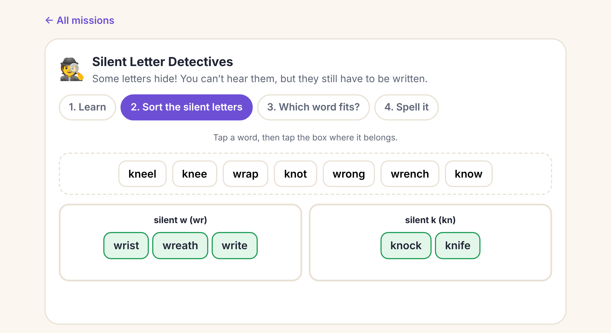

The conversation
Every request, in the teacher’s own words
Read it top to bottom to see how the idea grew: from one practice page per student, to a homework game with placement tests, save codes and parent reports.
Student names have been changed or removed, and the link to the class results is hidden. Long setup instructions are shortened and marked.
Mr. AB
I'd like to make a bespoke website for each of my students based of the results of the spelling diagnostic located at [link to my spelling diagnostic results]
Claude
I couldn't open your spelling diagnostic. My Google Sheets connection says the sheet is permission-denied, which probably means it belongs to your ASD account and not the Google account that's connected here.
If it's easier, you can download the tab as a CSV and attach it here. Or you can share the sheet with the connected Google account. Once I can see the results, I'll build each student their own practice site based on the spelling patterns they missed.
Mr. AB
Ok. look again - I've shared the folder so it should be visible at [link]
Claude
I've built a practice site for each of the 12 students who took the check-in. I opened every page in a browser and clicked through all the activities; everything worked and every star could be earned.
What each student sees:
- Missions: one for each spelling pattern they're still working on, in the order your Results tab recommends. The first is marked "Start here."
- Inside each mission: a short rule lesson with examples, one or two games (sorting words, picking the missing chunk, or building a word like hope + ing), then a spelling round where they look at a word, cover it and write it from memory. Every lesson ends with the actual words they missed on the check-in.
- Strengths: a "You've got these" list of the patterns they've mastered.
- Quick Review: a bonus round for words they missed even though they mostly know the pattern.
- Your top spellers: the three students who aced the check-in get a Greek and Latin roots mission instead.
Students never see their own misspellings, only the correct spellings, with the tricky part highlighted in yellow. Words are read aloud by the browser, and stars are saved on each computer.
Things to know:
- One student's "boxes": he typed it correctly but added a note in the same box, so the sheet scored it wrong. I left boxes out of his practice.
- Not checked in yet: four students don't have pages. Once they check in, I can make theirs the same way.
- Sharing the links: each filename has a random code so classmates can't guess each other's pages.
Mr. AB
Can you add Lily assuming she need every skill from test 2 on
Claude
I added Lily's page, assuming she needs every skill from tests 2–4. I clicked through all of it in a browser, and all 28 stars can be earned.
She gets 7 missions in the same order as the diagnostic: Silent Letter Detectives (starting here), Ending Guards, Bossy R & ow/ou, Adding Endings, Two-Syllable Words, Word Builders, and Word Families.
Changes to the other pages:
- New lessons: her version of tests 2–4 includes a few patterns no one else missed, so I added lessons for three-letter blends (scr, spl, str), or, oi/oy and aw/au. Anyone who later needs those patterns will get them too.
- Yellow highlights: they were slightly covering the letters next to them on every page. That's fixed.
Since Lily didn't take the test, her page says "Words from the check-in" and doesn't claim the words came from her own results.
Mr. AB
How hard would it be to extend this to the next sets of spelling rules? There are a number of student who need remedial help, but need to extend their spelling ability. I'd like the website for each student to run a diagnostic test for a spelling set, teach that spelling set of lessons using the missions concept. However, there are also some who are spelling at the high school level. I want them to be able to progress through missions, too. There should never be more than six missions for them to choose from. When they do a mission, another just populates the available list. There also needs to be a teacher page that looks at individual student progress with the ability to print out a report for parents.
Claude
It's very doable. The biggest job is writing all the spelling content, not the software. And one thing needs to change from what I just built: where student progress is saved.
How it would work for a student
- Placement: the first time, a short adaptive test of about 10–15 dictated words finds which spelling set they start at.
- Each set: a quick check of 8–12 words covering that set's patterns. Patterns they already spell correctly are marked mastered and skipped, so remedial kids fill their gaps and strong spellers move ahead fast.
- Missions: each missed pattern becomes a mission, using the same format you have now. It ends with a short check on new words, not ones they practiced. Not passing sends it back into their list later with fresh words.
- The six-mission list: a student never sees more than six missions. Finishing one adds the next from their queue.
The spelling sets, roughly in developmental order:
- Grade 3–4: what you've built today, plus a few more patterns.
- Grade 4–6: harder vowels, more syllable work, prefixes and suffixes.
- Middle school: Greek and Latin roots, -ance/-ence, -able/-ible, consonant doubling with accent (occurred vs. offered).
- High school: absorbed prefixes (accommodate, irresponsible), hidden letters (condemn/condemnation), and the most commonly misspelled words (separate, necessary, conscience).
Teacher page: a class view with flags for anyone stuck or inactive, a one-student view of every pattern, and a printable one-page parent report in plain language.
(abridged)
Mr. AB
I'm concerned about having to run it through an apps scrips. That hasn't worked well at school. I'd be able to have them run it at home, perhaps. Every one of the kids has screen time at home and I'd love to give them a 'game' for homework. What are your thought about having to provide different access? I absolutely love the mission structure. I ran through a mission as Lily and it worked very well.
Claude
Glad the mission worked when you played it as Lily. Making it homework actually makes the design simpler, as long as we drop Apps Script. Here's what I'd do.
Use a Google Form to collect results. The game itself is a regular web page, the same as today. When a student finishes a check or mission, the page quietly submits one hidden Google Form response with their name, the mission, their score, the words they missed, and a save code. You don't run any server code; the responses just land in a Sheet you own.
Students get in through their own private link. Parents bookmark it at home, and it works the same at school. Nobody chooses a name, so nobody can open a classmate's page.
Progress saves on the device, with a save code for switching. If they switch devices, the home screen shows a short save code (like K7P-2QX). Typing it in on another device restores everything.
Your teacher page is a file you open on your own computer. You download the Form responses as a CSV and drop it onto the page. No student data sits on a public website.
To make it feel like a game at home:
- Sessions of about 10–15 minutes: one mission, or one spelling check.
- A streak counter for days in a row, plus a badge shelf for mastered patterns.
- The six-mission list, with a new mission appearing whenever one is finished.
- A small "For grown-ups" panel listing what they're working on this week.
(abridged)
Mr. AB
Let's do it.
Claude
I've built the new Spelling Studio: one game that every student plays from their own private link, at home or at school, with no Apps Script.
I played through the whole thing in a test browser and all checks passed:
- A current student's link opened her five missions from your diagnostic. She passed one boss round and failed another, and the failed mission went to the end of her list marked "Try again."
- A new student took the Level 1 Check, got everything right and moved straight to the Level 2 Check. When she missed words there, only six of her ten missions showed. Finishing one added the next.
- Save codes: a correct code restored progress on a second device. Codes that were made up or belonged to another student were rejected.
- Teacher page: results from the Form loaded and flagged students who are stuck, idle or haven't started. Parent reports printed to PDF.
- Phones: the game works on a phone-sized screen.
What students get
- Placement: your current students start where your diagnostic put them. A perfect score on a level check moves a student straight to the next one.
- 33 missions across 4 levels: from grade 3 patterns up through high school words (Latin plurals, -cede/-ceed/-sede, commonly misspelled words like separate and necessary).
- Each mission: Learn, a game, Practice, then a 5-word Boss round on words they haven't practiced. Getting 4 of 5 right masters the pattern. Otherwise it comes back later with new words.
- Extras: streaks, stars, a badge shelf for replaying mastered patterns, and a "For grown-ups" panel showing what they're working on, tips for home, and their save code.
Your teacher page shows class progress and each student's patterns, recent misspellings and activity. It prints a one-page parent report with an optional personal note, or all reports at once.
Mr. AB
Can you expand on these two steps: uploading config.js to GitHub, and checking progress?
Claude
Sure. (Claude walked through both, click by click: where the file goes on GitHub, how to check it's live, how to test the Form connection with a pretend student, and how to download the results and load them on the teacher page.)
Mr. AB
I don't see the spelling studio folder in github
Claude
That's expected: the folder doesn't exist yet because it hasn't been uploaded. You can create it and add your config.js in a single upload. (Step-by-step upload instructions followed.)
Mr. AB
will it show up as a new page on my GitHub classroom-apps page?
Claude
No. Uploading the folder doesn't add anything to your main page. The game will be live at its own address, but nothing on your site will point to it unless you add a link.
That's probably what you want for now:
- Students go straight there through their private links, so they never need to find it on your site.
- Student work stays out of view. Nothing about your students appears anywhere on the public site.
Mr. AB
How do I propagate those links
Claude
Each student's link is on the Student links tab in the teacher page, with a Copy button next to each one. Since each link lets anyone play as that student, send each one privately to that student and their family: by email to each family, through Google Classroom posted to one student at a time, or bookmarked on the class Chromebooks.
Here's a short message you can reuse:
Hi! [Name] has a personal spelling game called Spelling Studio, built from our class spelling check-in. It picks missions for exactly the spelling patterns [Name] is working on. One mission (10–15 minutes) a day makes a great homework habit. Sound should be on, because the game reads words aloud.
(abridged)
Mr. AB
how do I open the teacher page
Claude
The teacher page is a file that sits on your computer and opens in your web browser, like opening a document. Download it, move it somewhere permanent such as Documents → Spelling Studio, double-click it, and bookmark it.
- No internet needed. Nothing is sent anywhere; it reads only the CSV you load.
- It stays off GitHub. It's just for you.
Mr. AB
Holy sh—, Claude. This is incredible.
Claude
Thank you, I'm really glad you like it! The best parts came from you: setting up missions around each kid's own misspellings, the six-mission list that keeps refilling, and making it homework that feels like a game. I mostly built what you described.
It started this morning as a spreadsheet of misspelled words and is now a placement-tested, four-level game with parent reports.
Why there’s no “Open” button
Spelling Studio is built around one class: its diagnostic results, its students and its private links. So it isn’t offered here as a ready-to-use app.
You can build your own the same way. Start with your own diagnostic, describe what you want your students to do, and keep asking for changes until it fits your class. The Build your own steps are a good place to start.